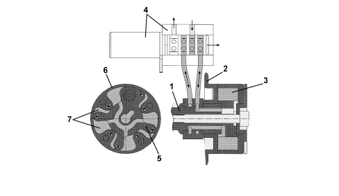

INTRODUCTION - TIMING SYSTEM
- Path
- Descriptions > 10 ENGINE > 1036 TIMING SYSTEM > INTRODUCTION - TIMING SYSTEM
- Kind
- system description
- Applies to
- engines: 2.2 JTS; all production periods
- Interactive page
- https://sloeber94.github.io/elrnDB-aBrrSpdr/en/#/946001176
Applies to: engines: 2.2 JTS; all production periods
SPECIFICATIONS
Chain-driven twin overhead camshaft timing system, four valves per cylinder, hydraulic tappets with roller-driven levers, vane-type continuous variable valve driving system on both camshafts.
Vane-type continuous variable valve timing
The vane-type variable valve timing system allow the phase to be varied continuously on both shafts. The angular position is given by the rotor-stator drive inside the vvt. The intake side vvt allows a camshaft angle of no less than 30°, while the exhaust side vvt allows rotation ofi 25°. The engine control unit determines cam position by means of sensors on the camshaft and crankshaft.
It consists of a stator that is made to turn with the crankshaft by means of a chain and a rotor connected directly to the camshaft that may move in relation to the stator.
The rotor and stator may be offset by using an electrohydraulic valve that allows the vanes between the them to be filled with fluid.
The solenoid consists of a needle cursor that is moved into three different positions via the electromagnetic induction of a solenoid.

1. Camshaft
2. Toothed wheel
3. Variable valve timing
4. Four-way solenoid
5. Rotor
6. Stator
7. Gaps
These different cursor positions create three different situations:
1) the fluid flows into the space between the stator and rotor so that the camshaft is offset anticlockwise;
2) the reverse situation to the above creates clockwise rotation;
3) retaining the fluid present in both gaps fixes the relative position.
A mechanical system (pin lock) on the variable valve timing does not allow it to operate until a given pressure is reached. Beyond this threshold, the system is made to operate by following optimum setpoints set in the control unit.
The benefits of this variable valve timing system are not perceptible in absolute terms, i.e. the maximum torque and power values are not higher than those of a system not equipped with variable valve timing but the engine is more vigorous throughout the rpm range.